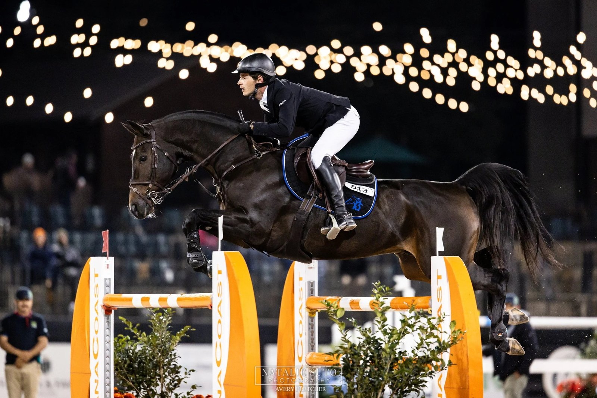

La semana del salto: Tryon y El Jadida, dos CSI5* entre el martes y el domingo
Diecisiete concursos internacionales se reparten por tres continentes del martes 13 al domingo 18 de octubre, con dos citas CSI5* como gran reclamo: el Tryon International Equestrian Center (Estados Unidos) y la etapa marroquí de El Jadida.

El Tryon Fall 5 se celebra del 14 al 18 de octubre en Mill Spring (Carolina del Norte) y combina una semana CSI5* con una CSI2*. El cuadro de pruebas incluye un gran premio CSI5* dotado con 340.000 dólares y una etapa de la Major League Show Jumping, con 250.000 dólares de bolsa, además del gran premio CSI2*. La organización no ha publicado todavía la lista oficial de inscritos; cuadro definitivo por confirmar.
La estrella del calendario fuera de Estados Unidos es El Jadida. El 17º Salón du Cheval, en el Parque de Exposiciones Mohammed VI, acoge del 15 al 18 de octubre su primera etapa CSI5* con validez para la Copa del Mundo. Es el ascenso de categoría con el que la federación marroquí marca el 15º aniversario del Morocco Royal Tour, una gira que este mismo año también ha subido Rabat y Tetuán al CSI4*-W. El Gran Premio de Su Majestad el Rey Mohammed VI se mantiene como prueba de referencia del concurso.
Entre los seis CSI3* del calendario, Oliva Nova es la cita de referencia para los jinetes y amazonas españoles: el Mediterranean Equestrian Tour abre su Autumn MET con una semana completa de pruebas hasta el domingo. Herning (Dinamarca), Leeuwarden (Países Bajos), Gassin-Saint Tropez (Francia), Gorla Minore (Italia) y el Beijing Bird's Nest (China) completan el pelotón 3*. Más abajo, seis CSI2* en Woodside, Chevenez, Kronenberg, Peelbergen, Dunkerque y San Giovanni in Marignano suman volumen al calendario, acompañados de tres CSI1* en Oceanía y el sudeste asiático.
Las listas de salida no están publicadas al cierre de esta previa en ninguno de los grandes concursos de la semana; inscritos por confirmar. En el calendario español, la pista levantina de Oliva Nova suele reunir en octubre una presencia alta de binomios nacionales, en particular con material joven, y la etapa Major League de Tryon tiende a concentrar al grueso de los conjuntos estadounidenses de la gira otoñal.
Por Lucía Valdeolmos